Playlist and patterns
Pattern, audio and automation clips on free lanes. Slice, fade, reverse, normalise, loop a region, and every edit is one undo step.
WAVE is a fast, FL-Studio-style DAW with a Rust audio engine: playlist, piano roll, a mixer whose effects show you what they do, a synth, a sampled grand piano, recording with comping and pitch editing. Free and open source.
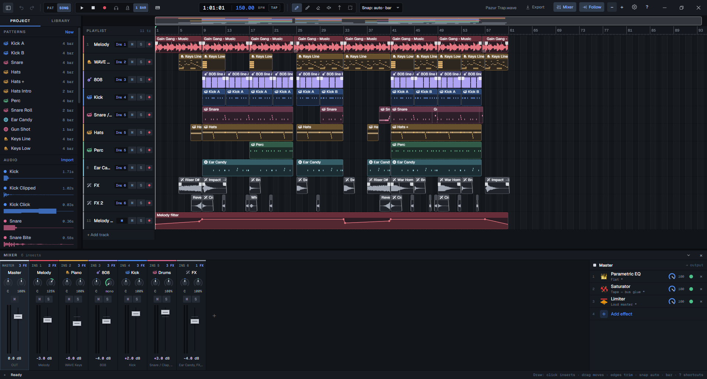
WAVE is a DAW: the program you make a whole track in, from the first drum pattern to the exported MP3. It follows the FL Studio way of working, so notes go into patterns in a channel rack, patterns and audio go onto a playlist, and everything runs through a mixer.
People who make beats and record vocals over them, and who want a small, quick program instead of a large one.
The open project can be edited from a command line while you look at it. So an AI agent can really work in it: it writes parts, sets knobs and measures the result, and you undo whatever you do not like.
Version 0.9, free and open source, built by one person with AI agents. It covers a complete beat and a vocal session. It does not have the plugin collection or the years of polish of a commercial DAW; the comparison says where.
Nobody touched a mouse for it. An agent (Claude Code) chose the samples, wrote the patterns, programmed the 808 slides, set every knob and bounced the mix through the wave command line. It cannot hear, so it mixed by measurement.
A melody loop, a distorted 808 with slides, trap drums and FX one-shots, the WAVE Keys piano on top, saturators on the 808 and the kick. The screenshot at the top of this page is this project.
It is a demo of the engine, not the ceiling. The beat uses a fraction of the app: no recording, no vocals, no pitch editing, no third-party plugins. A person at the keyboard, with or without an agent, can take the same tools much further.
Pattern, audio and automation clips on free lanes. Slice, fade, reverse, normalise, loop a region, and every edit is one undo step.
Step sequencer with swing and velocity, a piano roll for every pitched channel, and your computer keyboard or a MIDI keyboard as the instrument.
Inserts with 12 built-in effects, from EQ and compressors to a de-esser and live pitch correction. Each one draws what it is doing to the sound that is playing.
Two wavetable oscillators with unison, sub and noise, a multimode filter, two LFOs, a mod matrix and its own drive, chorus, delay and reverb. Factory presets from 808s to pads.
A sampled concert grand as a channel: 30 recorded notes at three dynamics, a clickable keyboard, and it ships inside the installer.
Record over a loop and every pass becomes a take. Pick the best parts, crossfade them, flatten when you are done. Latency is measured, not guessed.
A note-level pitch editor, Tune to Reference (pull a take onto a guide vocal), live pitch correction, a vocal rider, de-esser and denoiser, and a one-click vocal chain.
VST3 effects with a crash-proof plugin scan: their own editor windows on Windows, WAVE's parameter list on Linux. WASAPI and ASIO on Windows, ALSA and JACK on Linux.
Bounce the song or a loop to 32-bit float WAV or MP3, offline, while the project keeps playing.
Every plugin uses the same knobs, so each parameter can be automated and nothing has to be relearned. The picture above the knobs is drawn from the audio that is passing through. These are the real windows; the moving ones were recorded while a beat plays. VST3 effects load next to them.
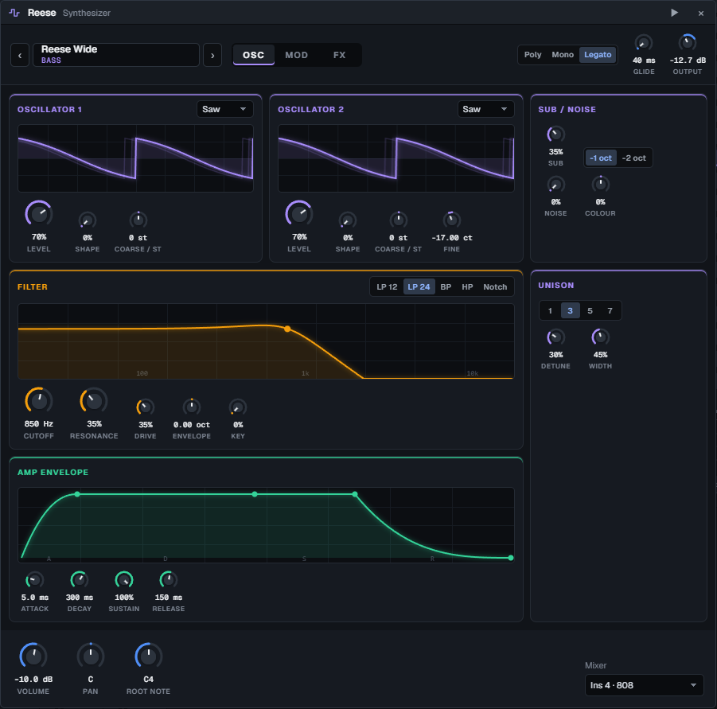
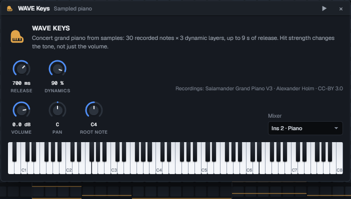
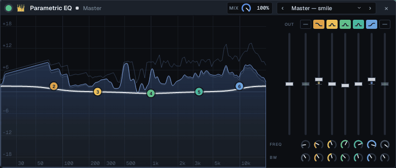
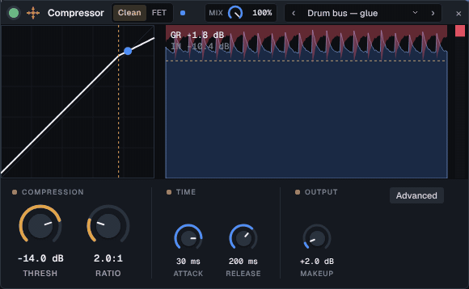
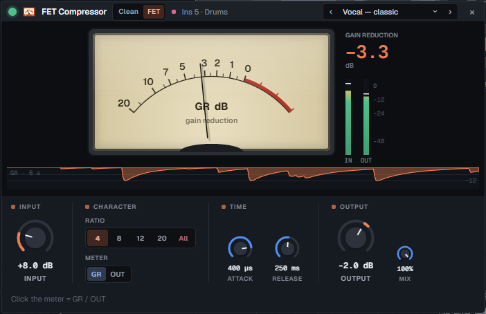
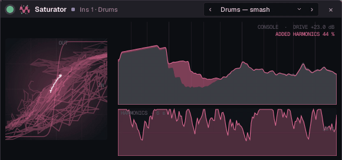
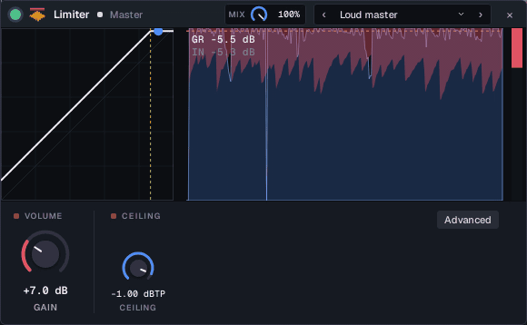
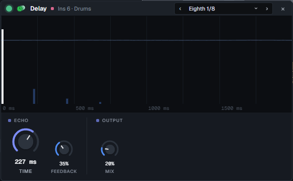
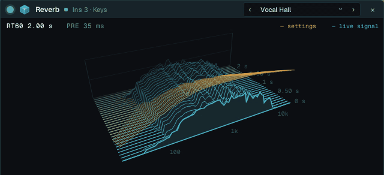
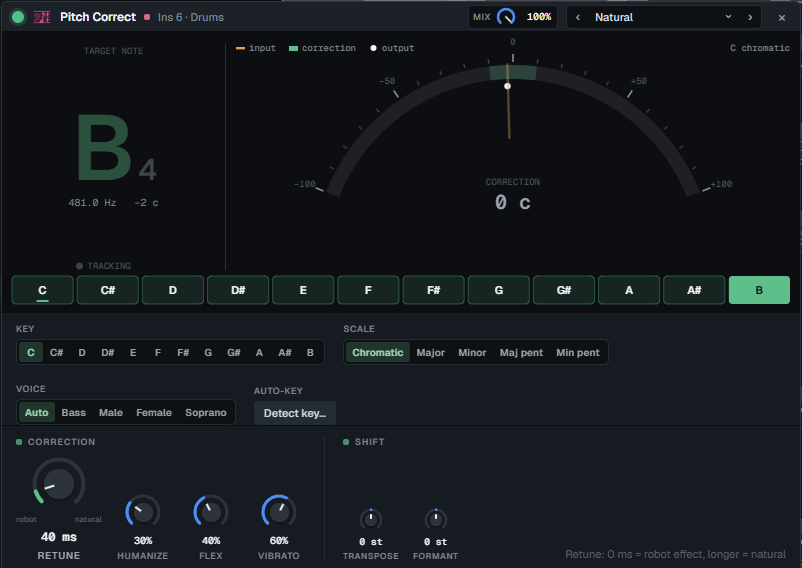
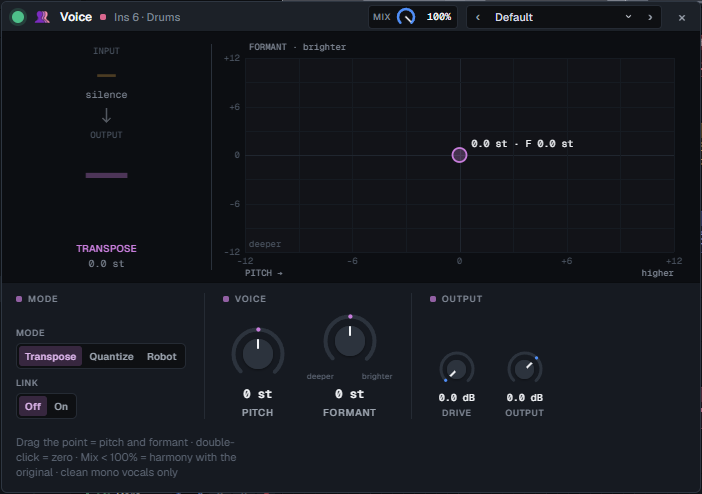
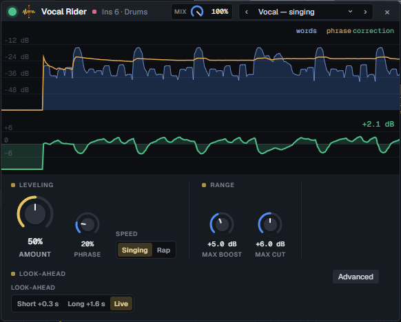
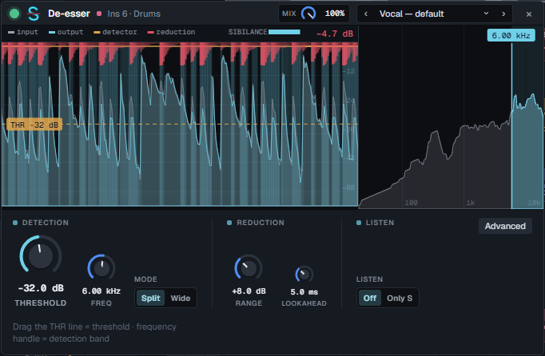
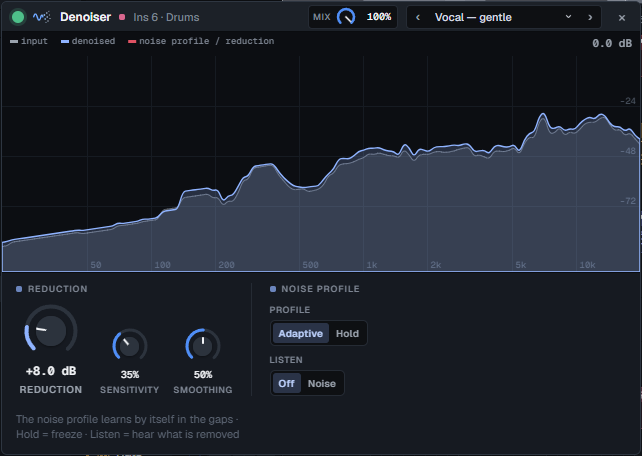
WAVE installs a wave command that talks to the running app. An agent such as Claude Code uses it to edit the project you have open, while you watch and keep working.
wave context returns the project as JSON; wave analyze detects tempo and key.wave render bounces offline and reports peak, level and clipping, so the agent can measure a mix it cannot hear.--if-revision stops the agent from overwriting what you changed meanwhile.# what an agent runs while you listen $ wave context --pretty # tracks, inserts, patterns, channels $ wave bpm 150 $ wave channels --keys # add the WAVE Keys piano $ wave pattern --id 2 --ch hat --steps "x.x. x.x. x.x5 x.x9" $ wave add-fx --insert 3 --type sat --preset 5 $ wave set-param --fx 1203 --param drive --value 72 $ wave render --out check.mp3 --from 0 --to 32 { "peakDbfs": -1.1, "rmsDbfs": -12.3, "clippedSamples": 0 } $ wave undo # or you press Ctrl+Z
WAVE is open source and small enough for a coding agent to understand. A built-in plugin is a Rust DSP module, a table of parameters and a canvas drawing. Clone the repository, open it in Claude Code and describe the effect or instrument you want.
$ git clone https://github.com/miskibin/wave-DAW $ cd wave-DAW && claude > Add a bitcrusher effect: bit depth, sample-rate reduction and mix. Show the stepped waveform against the input, like the saturator does. # the agent writes the DSP, the parameters and the # display and runs the tests; after a rebuild the # effect is in the "Add effect" list $ cd app && cargo tauri dev
WAVE borrows FL Studio's way of working, so that is the fair comparison. FL Studio is a mature product with more than twenty-five years behind it, and it wins on breadth. The green bar marks the stronger side of a row.
| WAVE 0.9 | FL Studio | |
|---|---|---|
| Price | Free | About $99 to $450 depending on the edition, paid once, with free updates |
| Audio recording | Included, with takes and comping | Needs the Producer edition or higher |
| Vocal pitch editing | Included: note editor, live correction, Tune to Reference | NewTone and Pitcher come with the higher editions |
| Source code | Open, AGPL-3.0 | Closed |
| Working with an AI agent | The agent edits the open project through the wave command and measures its own renders | No command line into the open project |
| Adding your own plugin | Describe it to a coding agent; it is built into the app itself | Write a VST with a plugin SDK, or build one in Patcher |
| Built-in instruments and effects | 14: a synth, a sampled grand, 12 effects | More than a hundred across the editions |
| Third-party plugins | VST3 effects (plugin windows on Windows only) | VST instruments and effects, and more formats |
| Platforms | Windows and Linux | Windows and macOS |
| Maturity | Young: version 0.9, one developer, expect rough edges | Since 1998, with a large community, tutorials and sample packs |
FL Studio details as of November 2026. Prices are approximate list prices and change with sales; see Image-Line's edition comparison. FL Studio is a trademark of Image-Line, and WAVE is not affiliated with it.
The audio callback never allocates, locks or touches a file. Moving a knob never rebuilds the graph. Every moving picture in the interface is drawn on canvas from one binary telemetry frame.
Yes. There is one build, no paid edition and no account. The source is open under AGPL-3.0.
For beats built from the built-in synth, the piano, samples and your own recordings: yes. If your sound depends on VST instruments such as Serum, or on FL's own plugins: not yet.
No. Windows and Linux (deb, rpm, AppImage) only.
VST3 effects, with their own windows on Windows and WAVE's parameter list on Linux. No VST instruments, CLAP or LV2 yet.
No. Bring stems or samples over; WAV, FLAC, OGG and MP3 import by drag and drop.
No. It is a normal DAW with a mouse and a keyboard. The wave command is there if you want an agent, or your own script, to work in the project.
Yes. Pick JACK in Settings to use PipeWire's JACK at the server's rate and buffer, or use ALSA. WAVE reopens the device if the audio server restarts.
Mostly, directed by a musician who works with DSP for a living. The engine has tests for clicks, aliasing and loudness, and a benchmark that counts allocations in the audio callback.
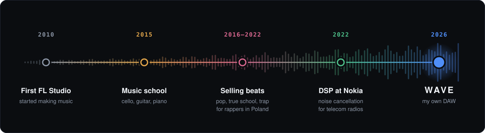
My whole life led me to this product, and with AI I can finally build it. Yes, the app is vibe-coded with Claude Fable, but at least I know what the code is doing.
I now use WAVE for everything I used FL Studio for.
The Windows installer includes ASIO support and the WAVE Keys piano. Linux packages are attached to the same release. Or build it yourself:
$ pnpm --dir ui install $ cargo install tauri-cli --version "^2" $ cd app && cargo tauri dev